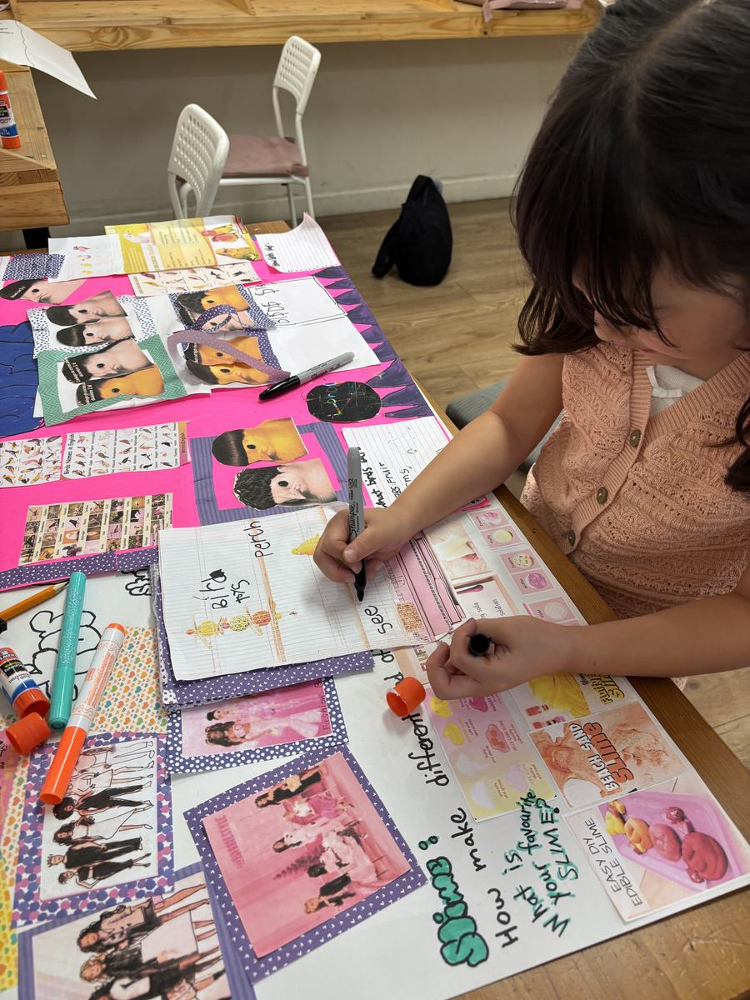
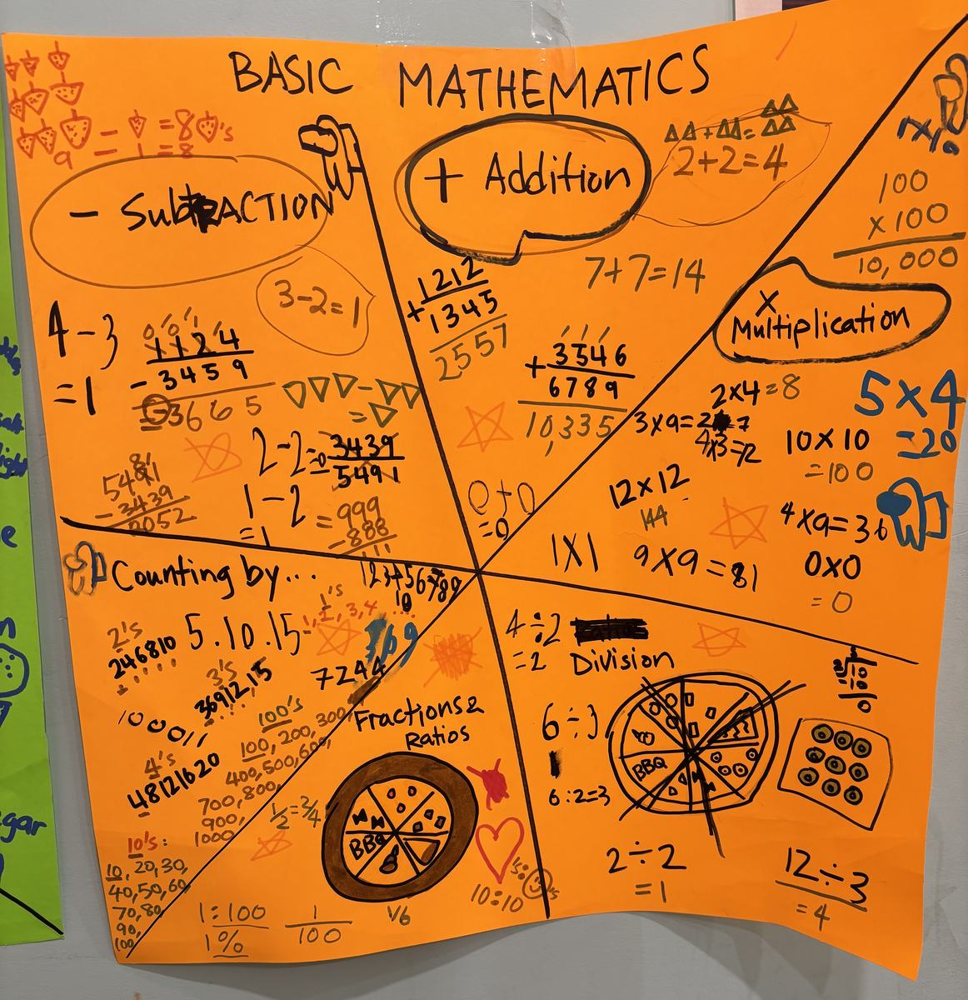

새로운 오너십과 함께
다시 시작합니다 ✨
정철 JC 애프터스쿨이 새로운 오너십과 함께 다시 문을 엽니다. 더 따뜻하게, 더 세심하게 — 아이 한 명 한 명의 성장과 배움을 함께하겠습니다. 시작을 알리는 그랜드 오픈 특별 프로모션을 준비했습니다.
🎉 그랜드 오픈 특별 프로모션 지금 등록하시면
신규 등록비를 전액 면제해 드립니다.
첫 한 달을 부담 없이 경험해 보세요.
⚠️ 소수정예로 운영하기 때문에 반별 자리가 한정되어 있습니다. 마감되면 다음 기수를 기다리셔야 합니다.
📌 하루가 이렇게 이어집니다 픽업부터 학습까지
Kinder–Grade 7 학생의 하교 동선을 상담하고, 학교 문 앞에서 센터까지 선생님이 직접 데려옵니다. Tri-City · Burnaby · Surrey 전 지역, 차량 5대를 운행합니다.
도착하면 먼저 숨을 돌리고 간식을 먹습니다. 땅콩·견과류는 일절 사용하지 않으며, 알러지는 상담 때 알려주시면 따로 챙깁니다.
아이 혼자 있는 시간이 생기지 않도록, 데리러 오실 때까지 선생님이 함께합니다.
숙제를 미루지 않도록 곁에서 살피고, 남는 시간에는 학년과 현재 수준에 맞춰 부족한 과목을 보완합니다.
📚 돌봄만 하는 방과후가 아닙니다 그 시간에 무엇을 하느냐
아이를 안전하게 데리고 있는 것까지가 방과후의 절반입니다. 나머지 절반은 그 시간에 무엇을 하느냐입니다. 아이가 편안하고 즐겁게 머무는 동안, 숙제 습관과 수학·과학·영어 실력, 그리고 자신감이 함께 쌓이도록 돕습니다.




📋 운영 안내
🧡 먼저 하루, 무료 체험
설명을 듣는 것보다 아이가 하루를 직접 보내보는 편이 훨씬 정확합니다. 픽업부터 간식 · 숙제 · 학습까지 실제 하루를 그대로 경험해 보세요. 체험 후에 결정하셔도 됩니다.
상담 시 알려주세요: 자녀 학년 · 학교명 · 필요한 픽업 요일 · 관심 과목(수학·과학·영어) · 원하는 시작일
※ 이 페이지의 사진은 모두 코퀴틀람 JC 센터에서 촬영한 실제 수업·간식 모습입니다.